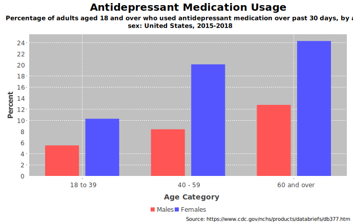
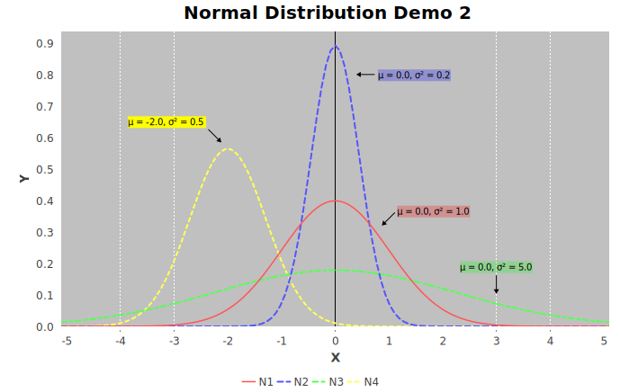
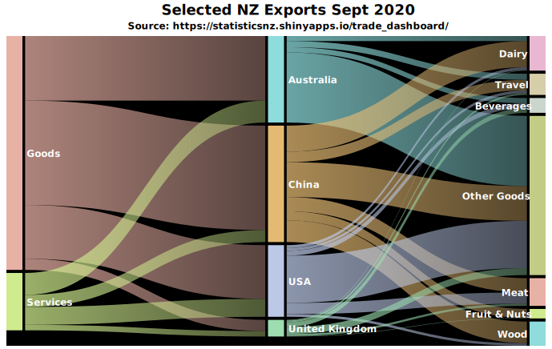
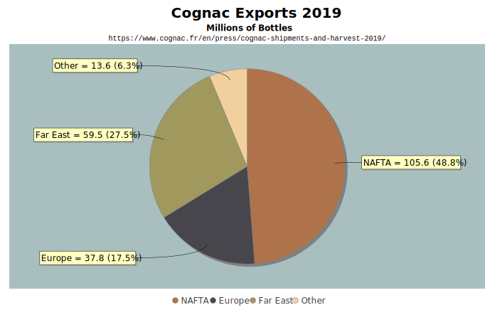

JFreeChart is a chart library for the Java platform that can generate a
wide variety of charts for use in both client and server-side applications. It
has built-in support for Swing, plus JavaFX support is provided via an extension library called JFreeChart-FX
(https://github.com/jfree/jfreechart-fx). JFreeChart requires Java 8 or later.
The JFreeChart project is hosted at GitHub:
https://github.com/jfree/jfreechart.
Here are some sample charts created with JFreeChart and rendered to SVG using JFreeSVG:



